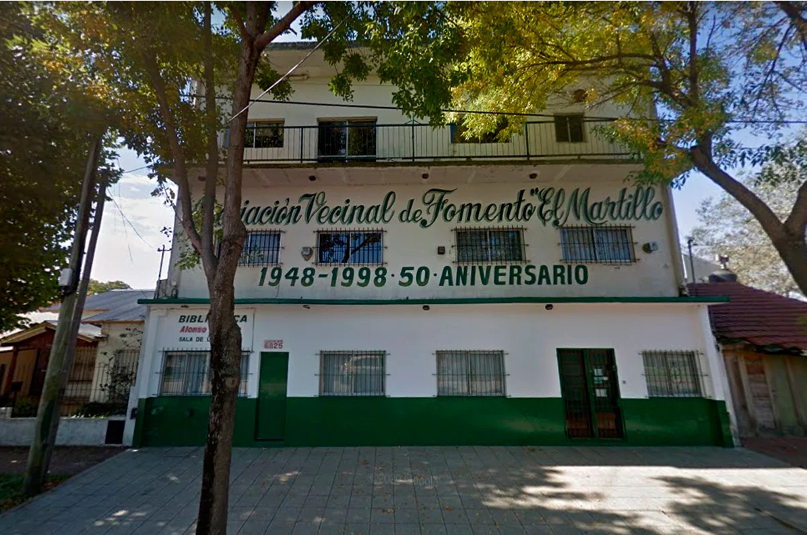

Somos un Museo que busca fortalecer la memoria colectiva del
barrio y su identidad , rescatar la historia de la Asociación
así como contribuir para que los vecinos ejerzan sus derechos a
conocerse, educarse y recrearse.
El Museo de la Asociación Vecinal de Fomento El Martillo propone
reconocer el pasado en el presente para legado de las
generaciones futuras. Visibilizar al barrio y la historia de sus
vecinos e instituciones en un mundo globalizado.
Está pensado como un espacio de participación, encuentro, disfrute y transformador de realidades. Donde esperamos que los vecino/as puedan acercarse y formar parte de las actividades propuestas ,acercarnos sus sugerencias e inquietudes; y así juntos podamos construir ciudadanía ,desde perspectivas más justas e inclusivas.
